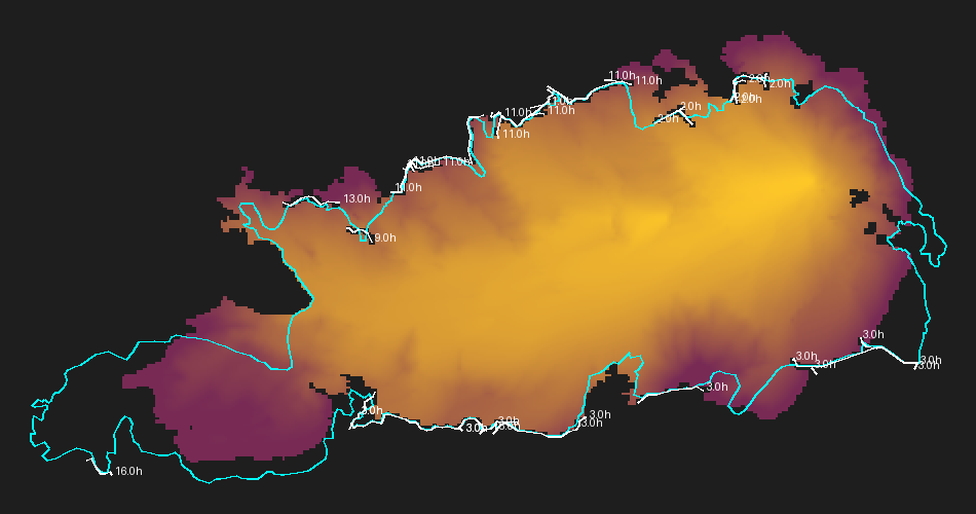
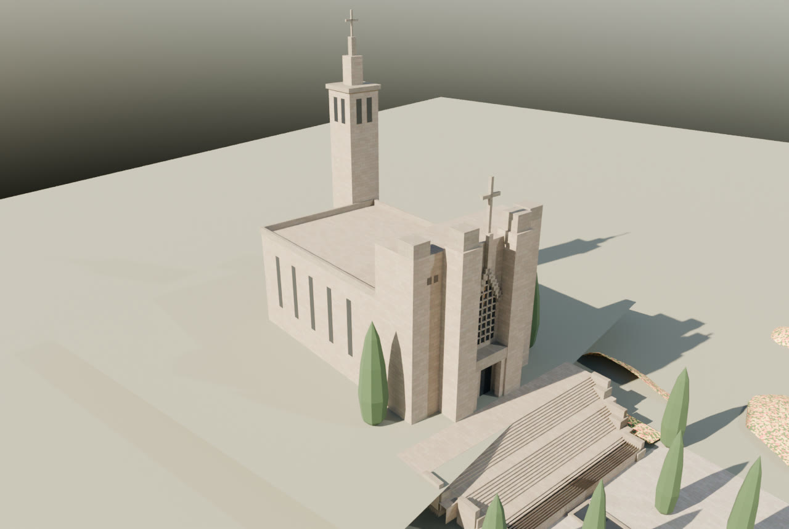
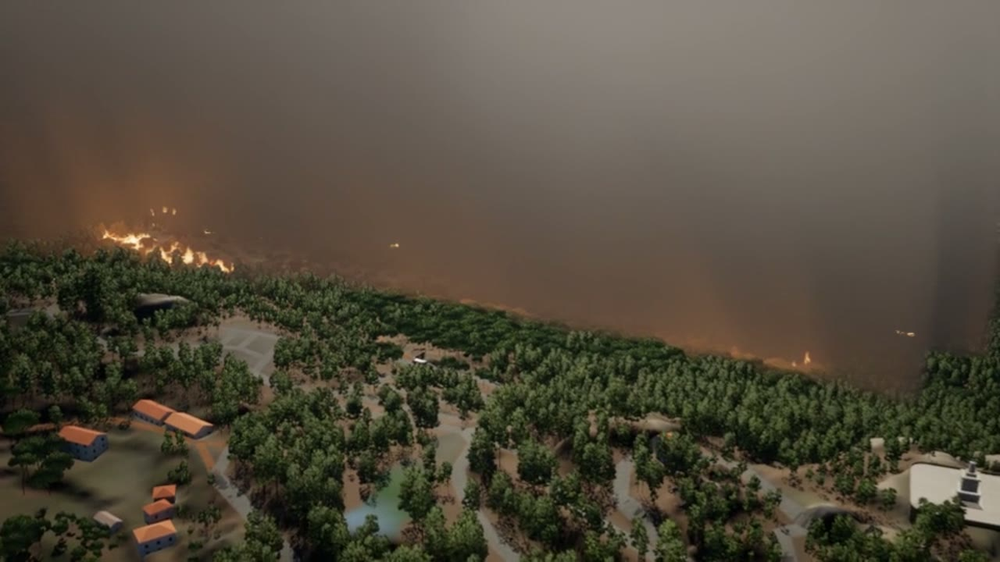
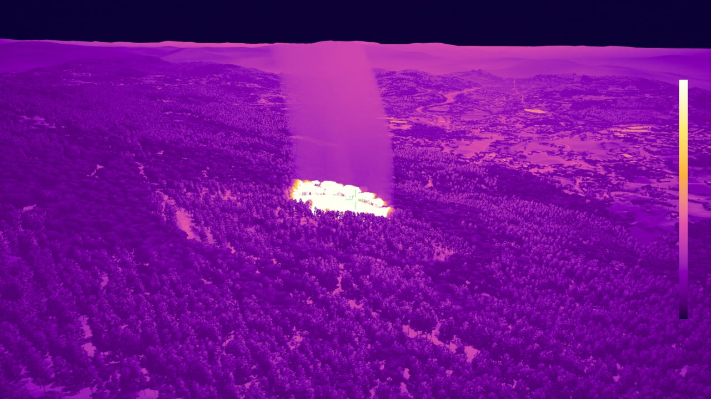
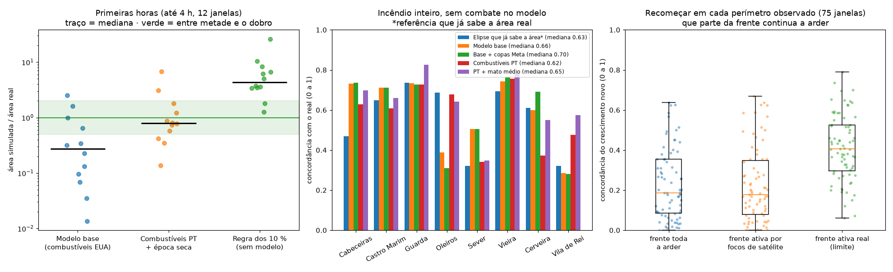
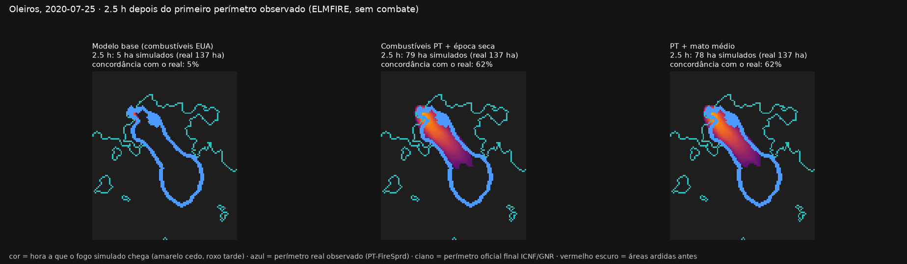
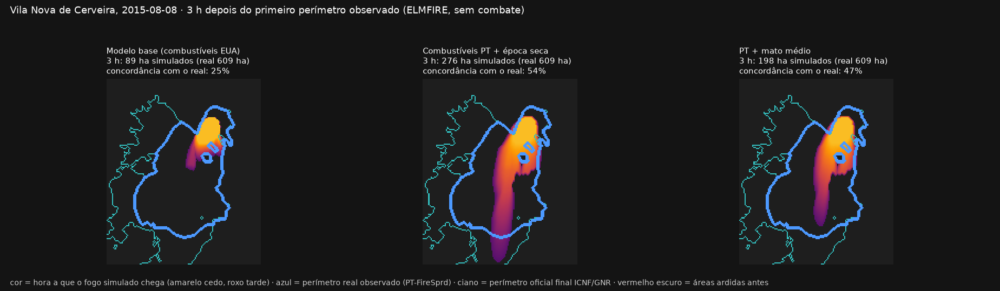
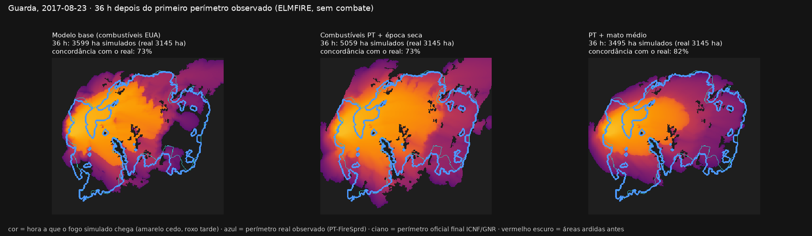
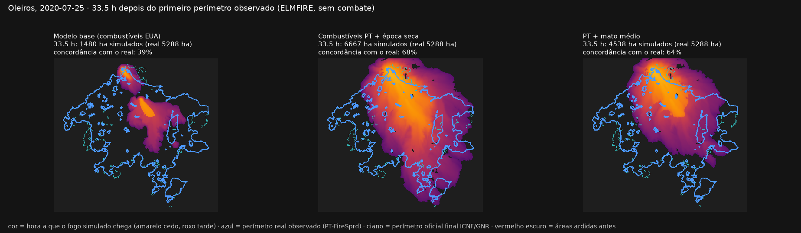
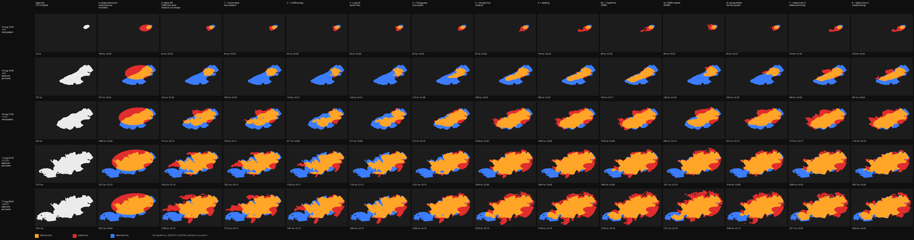

Só em 2025 arderam em espaço rural
≈ 11 concelhos de Guimarães
Nesses minutos, quem decide precisa de uma visão comum
e de antecipar o efeito de cada decisão.
No vento, no combustível e na ignição
Mostra ocorrências e meios, mas não testa decisões
Mostram o risco do dia, mas não simulam o incêndio
Preveem a propagação, mas não propõem ataques otimizados
Validação · incêndio real de Vieira do Minho, 2016

+13 p.p.
de área coincidente com o perímetro real
pitch/video/DEMO.mp4Para correr a apresentação: python3 -m http.server 8642 --directory pitch → http://127.0.0.1:8642pitch/video/drone-deteccao.mp4Para correr a apresentação: python3 -m http.server 8642 --directory pitch → http://127.0.0.1:864211 Guimarães arderam em 2025.
Quem combate merece estar um passo à frente do fogo e decidir com tempo.
Obrigado!
Incêndios observados: PT-FireSprd v1, Benali et al., Earth System Science Data, 2023.
Registos oficiais: ICNF, SGIF; perímetros GNR/GTF; relatório provisório RIF05/2016.
Satélite: "We acknowledge the use of data and imagery from LANCE FIRMS operated by NASA's Earth Science Data and Information System (ESDIS)".
Motor de propagação: ELMFIRE, Chris Lautenberger (EPL 2.0). SimFire 2.0.1 como alternativa.
Combustíveis: Fernandes et al. (2009), Modelos de combustível florestal para Portugal; parâmetros de Paixão (2017); COS 2015 v2 (DGT).
Relevo e copas: Copernicus DEM GLO-30; LiDAR nacional da DGT (MDS/MDT 2 m).
Meteorologia: ERA5 via Open-Meteo; CERRA (Copernicus).
Índice de perigo: FWI canadiano, Van Wagner (1987); Lawson & Armitage (2008).
Meios: Matos (2025), tese de doutoramento, Universidade do Minho, hdl 1822/97938 (CC BY-NC-SA 4.0); INE; CAOP2025 (DGT, CC BY 4.0).
Otimização: Mendes & Alvelos (2023), European Journal of Operational Research 304(3), doi:10.1016/j.ejor.2022.04.037.
Mapa e dados vetoriais: CesiumJS e Cesium ion; © contribuidores do OpenStreetMap (ODbL).
Apresentação: reveal.js (MIT).
IA: assistentes de programação (Claude, Gemini e ChatGPT) usados no código e nos documentos.
pitch/video/render-descolagem.mp4pitch/video/render-area-ardida.mp4pitch/video/render-vieira-elmfire.mp4


Terreno e árvores do LiDAR, edifícios e estradas do OpenStreetMap; chamas, brasas e fumo seguem o tempo de chegada simulado pelo ELMFIRE.

9 incêndios do PT-FireSprd (perímetros reais hora a hora), um por ano de 2015 a 2021, do Minho ao Algarve.
Modelo base: o ELMFIRE só com os dados de base (modelos de combustível norte-americanos, Scott & Burgan), o ponto de partida antes das nossas melhorias.
Combustíveis PT + época seca: modelos de combustível portugueses (Fernandes et al. 2009) e vegetação viva seca, como em agosto.
Regra dos 10 %: a regra empírica sem modelo, a cabeça do fogo anda a 10 % da velocidade do vento.
Concordância (índice de Sørensen): quanto o fogo simulado e o real coincidem, de 0 a 100 %. Desce tanto se o modelo falha fogo como se queima terreno a mais.
Frente ativa: entre dois perímetros observados só uma pequena parte da frente avança, o resto foi segurado pelo combate.
Nas primeiras horas, os combustíveis PT fazem 0,8× a área real (o modelo base faz 0,27×). Depois, saber que parte da frente está ativa duplica a concordância (19 % → 41 %).


Cor: onde o fogo simulado (ELMFIRE) chegou, amarelo mais cedo, roxo mais tarde.
Azul: o perímetro real nessa hora. Ciano: o perímetro oficial final (ICNF/GNR).
Cada painel é uma versão do modelo, a partir do mesmo primeiro perímetro observado, sem combate.
Concordância (índice de Sørensen): quanto o fogo simulado e o real coincidem, de 0 a 100 %. Desce tanto se o modelo falha fogo como se queima terreno a mais.
Oleiros às 2,5 h e Cerveira às 3 h: o modelo base quase não sai do sítio; com combustíveis portugueses o fogo simulado acompanha o real.


As mesmas cores do slide anterior, no fim do incêndio (Guarda 2017 às 36 h, Oleiros 2020 às 33,5 h).
Mato médio: um modelo de mato mais baixo (V-MMb) em vez do mato alto do Minho (V-MAa).
O modelo não tem combate: queimar a mais nos flancos é, em parte, o que os bombeiros seguraram. É aí que entram as linhas de ataque (cenário B).
Concordância (índice de Sørensen): quanto o fogo simulado e o real coincidem, de 0 a 100 %. Desce tanto se o modelo falha fogo como se queima terreno a mais.
Nenhuma versão ganha em todos os incêndios: o combustível é o que mais pesa, e o modelo de mato tem de ser escolhido por região.

Linhas: horas do incêndio (10 ago 12:00 a 11 ago 08:30). Colunas: cada uma junta uma entrada à anterior.
■ ardeu no real e no modelo · ■ só no modelo · ■ só no real.
0 modelo base · 1–3 humidade hora a hora, copas do LiDAR, áreas ardidas antes · 4 combustíveis PT · 5 vegetação viva seca · 6 projeções · 6w/6c vento do relevo / CERRA · 7/8 linhas de ataque inferidas.
Por baixo de cada mapa: área e concordância (S) com o real.
Concordância às 08:30: 73 % (modelo base) → 84 % (com linhas de ataque). O 76 % → 89 % do slide de validação compara com o perímetro oficial.